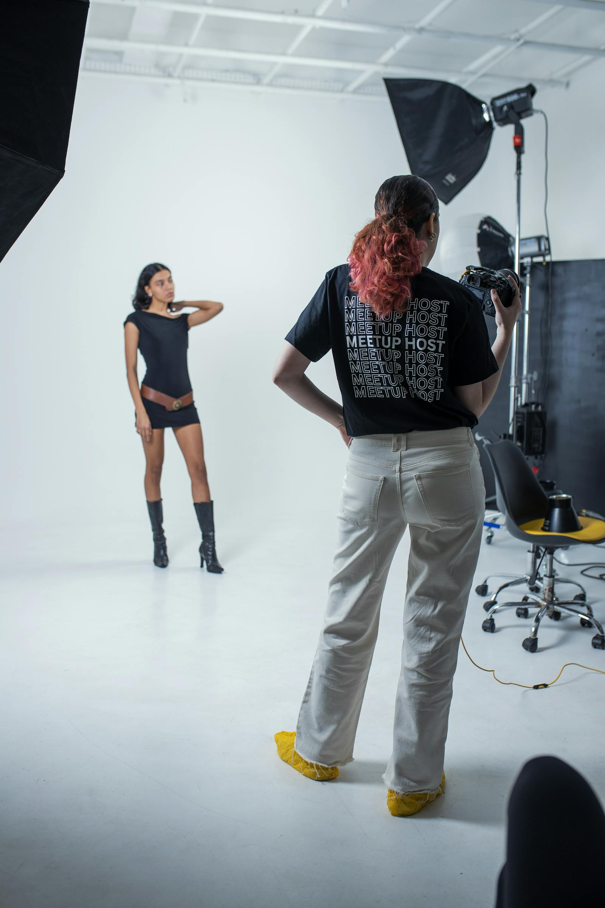

Most studios hire a retoucher before they hire a colour-managed workflow. That is backwards. A retoucher can only fix what the file contains; a calibrated pipeline ensures the file contains what the client approved.
The expensive mistake.
In 2018, a fashion client came to us with a campaign shot by another studio. The lookbook had gone to print. The skin tones were green. The fabrics were desaturated. The black point had crushed. The client had paid $40,000 for the shoot and $12,000 for retouching. The reprint cost $18,000. The root cause was not the retoucher — it was that the studio had no calibrated monitor, no printer profile, and no proofing step. The retoucher graded on an uncalibrated iMac. The printer printed to their house profile. Nobody checked.
What calibration actually means.
It is not buying a colorimeter. It is a chain:
- Capture: Camera profiled with an X-Rite ColorChecker Passport under the exact lighting of the shoot. Every shoot. Every location.
- Monitor: Eizo CG series, hardware-calibrated to D65, 120 cd/m², gamma 2.2, verified weekly with a ColorMunki Display.
- Working space: Adobe RGB (1998) for capture, ProPhoto RGB for retouching, GRACoL2013 for print delivery.
- Proofing: Soft-proof on the calibrated monitor. Hard proof on the contract proofing device (Epson SureColor P20000 with SpectroProofer). Client signs the hard proof.
- Print: Printer receives the GRACoL-tagged TIFF. No conversion at their end.
The retoucher grades what the monitor shows. If the monitor lies, the retoucher lies.— Rosa Linder, In-house Retoucher · since 2017
The cost comparison.
Annual calibration budget (studio of 8)
- Colorimeter + spectrophotometer$1,200 (amortised over 3 years)
- Monitor recalibration (weekly × 4 monitors)$0 (in-house)
- Printer profiling (monthly × 2 printers)$2,400
- Proofing media (ink + paper)$3,600
- ColourChecker Passport replacement (annual)$180
- Total$7,380 / year
One reprint of a 96-page catalogue: $12,000–$18,000. One client lost to colour issues: incalculable. The calibration budget pays for itself if it prevents one reprint every two years. We have not had a colour-related reprint since 2016.
Hiring the printer first.
When we onboard a new client for a Marque-tier engagement (full season, print + digital), the first meeting after the creative kickoff is with the printer. Not the retoucher. The printer tells us: paper stock, ink limits, total ink coverage, drying time, proofing substrate. We build the colour pipeline around the printer's constraints. The retoucher then works inside a known, fixed output space.
This sounds obvious. It is not standard. Most studios hand the retoucher a brief and a deadline, then send the files to the printer and hope. Hope is not a workflow.

The solo studio version.
If you are a solo photographer, you cannot afford a proofing printer. You can afford:
- A used Eizo CG2420 ($800 on eBay)
- A ColorMunki Display ($150 used)
- A ColorChecker Passport ($90)
- A relationship with a local lab that will run a $25 proof print
Total: ~$1,100. That is less than one day of retouching. It buys you the confidence that what you see is what the client gets.
The cultural shift.
The hardest part is not the hardware. It is the discipline. Every Monday, the first 30 minutes of the studio day is calibration verification. No exceptions. The producer knows not to book calls before 09:30. The retoucher knows the monitors are verified before she opens a file. The printer knows they will receive GRACoL-tagged TIFFs, not "whatever the retoucher exported."
When a new team member joins, their first week is spent learning the colour pipeline — not the camera, not the lighting, not the retouching. The pipeline. Because if the pipeline breaks, none of the rest matters.
We have not had a colour-related reprint since 2016. The calibration budget is the cheapest insurance we buy.— Mira Halden, Founder · Lead Photographer
The one question.
Next time you are about to hire a retoucher, ask yourself: Does the file they will receive actually contain the colours the client approved? If the answer is "I think so" or "the retoucher will fix it," hire the calibration first. The retoucher will thank you. The client will keep coming back. The printer will send you a Christmas card.